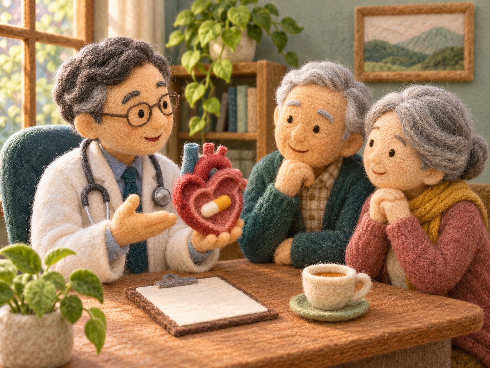

無導線節律器健保給付條件是什麼？12/1 新制心房型、心室型怎麼分
粉專「一千個傷心的理由」貼文素材｜
在粉專上看起來的樣子
一千個傷心的理由剛剛・公開
無導線節律器健保有給付嗎？有，但只給裝不了傳統節律器的少數人，其他人想裝是自費，費用請向醫院詢問。
門診常見有人因為心跳太慢來看診，一坐下就問：聽說有那種不用導線、胸前也不用放盒子的小節律器，可以用健保嗎？這種小型節律器只有幾公分長，從大腿的靜脈送進心臟，直接固定在心臟裡面。傳統節律器則是在胸前皮膚下放一個小盒子，再用導線接到心臟。
先說誰符合。所謂裝不了，指的是兩大類情況。首先，通往心臟的血管路不通，例如兩邊鎖骨下的靜脈都塞住、上腔靜脈塞住，或是有洗腎用的廔管、導管，胸前放了化療用的人工血管。再來，胸前的皮膚和肌肉組織受過傷，例如原本裝節律器的地方感染、開刀清創過，或是胸前腫瘤切除、做過放射治療、嚴重燒燙傷。後面這一類，是 2026 年 12 月 1 日起才加進來的。符合的人要由醫院先送健保審查，通過了才能用健保。
12 月 1 日起，健保署再依心跳慢的原因，把申請分成三種。心跳慢可能是心房裡自己發電的地方變慢，也就是病竇症候群，這種可以申請心房型。也可能是電訊號從心房傳不到心室，也就是房室傳導阻滯，這時要看有沒有持續性或永久性心房顫動：有的話申請心室型，沒有、心房還正常跳的話，申請能感應心房的心室型。三種都要先符合裝不了傳統節律器。
有一個情境我想特別提。有人因為病竇症候群先裝了心房型，過了一段時間又新出現房室傳導阻滯，這時可以再申請心室型，不受心房顫動的限制。條文沒有寫兩次手術要隔多久，所以要由醫師評估後送審。另外，新病人一次同時裝心房和心室兩顆，新制條文沒有列，我不能說有給付，也不能說一定不給付，要由醫院向健保署確認。
如果您能裝傳統節律器，但想裝無導線的，也可以選擇自費。適不適合，要看心跳慢的原因、血管、身體狀況，以及您在意的生活情形。我在門診會先把原因找出來，再把兩種節律器的好處和風險都講清楚，讓您和家人自己決定。
記住一句話：健保給付看的是裝不裝得了傳統的，不是想不想裝無導線的。您家裡有長輩心跳慢、正在考慮裝節律器嗎？歡迎在留言區說說您擔心哪一點。
每個人的狀況不同，貼文不能取代門診評估。
#無導線節律器 #健保給付 #無導線心律調節器 #病竇症候群 #房室傳導阻滯 #心跳太慢 #新竹馬偕 #林柏霖醫師

一千個傷心的理由朋友們，每個人的身體狀況都不一樣，如果覺得哪裡不舒服，記得盡快到醫院做檢查和診斷，找出原因再好好治療喔！
我的門診在新竹馬偕紀念醫院心臟內科：週二下午、週三上午、週四上午和週四夜診，以醫院掛號頁公告為準。
網路掛號：https://www.hc.mmh.org.tw/register_single_doctor.php?depid=14&drcode=5940
如果現在胸痛、喘不過氣，或覺得快要昏倒，請不要等，直接撥 119 或到急診。
圖片長按圖片存到相簿
主文
無導線節律器健保有給付嗎？有，但只給裝不了傳統節律器的少數人，其他人想裝是自費，費用請向醫院詢問。
門診常見有人因為心跳太慢來看診，一坐下就問：聽說有那種不用導線、胸前也不用放盒子的小節律器，可以用健保嗎？這種小型節律器只有幾公分長，從大腿的靜脈送進心臟，直接固定在心臟裡面。傳統節律器則是在胸前皮膚下放一個小盒子，再用導線接到心臟。
先說誰符合。所謂裝不了，指的是兩大類情況。首先，通往心臟的血管路不通，例如兩邊鎖骨下的靜脈都塞住、上腔靜脈塞住，或是有洗腎用的廔管、導管，胸前放了化療用的人工血管。再來，胸前的皮膚和肌肉組織受過傷，例如原本裝節律器的地方感染、開刀清創過，或是胸前腫瘤切除、做過放射治療、嚴重燒燙傷。後面這一類，是 2026 年 12 月 1 日起才加進來的。符合的人要由醫院先送健保審查，通過了才能用健保。
12 月 1 日起，健保署再依心跳慢的原因，把申請分成三種。心跳慢可能是心房裡自己發電的地方變慢，也就是病竇症候群，這種可以申請心房型。也可能是電訊號從心房傳不到心室，也就是房室傳導阻滯，這時要看有沒有持續性或永久性心房顫動：有的話申請心室型，沒有、心房還正常跳的話，申請能感應心房的心室型。三種都要先符合裝不了傳統節律器。
有一個情境我想特別提。有人因為病竇症候群先裝了心房型，過了一段時間又新出現房室傳導阻滯，這時可以再申請心室型，不受心房顫動的限制。條文沒有寫兩次手術要隔多久，所以要由醫師評估後送審。另外，新病人一次同時裝心房和心室兩顆，新制條文沒有列，我不能說有給付，也不能說一定不給付，要由醫院向健保署確認。
如果您能裝傳統節律器，但想裝無導線的，也可以選擇自費。適不適合，要看心跳慢的原因、血管、身體狀況，以及您在意的生活情形。我在門診會先把原因找出來，再把兩種節律器的好處和風險都講清楚，讓您和家人自己決定。
記住一句話：健保給付看的是裝不裝得了傳統的，不是想不想裝無導線的。您家裡有長輩心跳慢、正在考慮裝節律器嗎？歡迎在留言區說說您擔心哪一點。
每個人的狀況不同，貼文不能取代門診評估。
#無導線節律器 #健保給付 #無導線心律調節器 #病竇症候群 #房室傳導阻滯 #心跳太慢 #新竹馬偕 #林柏霖醫師
第一則留言
朋友們，每個人的身體狀況都不一樣，如果覺得哪裡不舒服，記得盡快到醫院做檢查和診斷，找出原因再好好治療喔！
我的門診在新竹馬偕紀念醫院心臟內科：週二下午、週三上午、週四上午和週四夜診，以醫院掛號頁公告為準。
網路掛號：https://www.hc.mmh.org.tw/register_single_doctor.php?depid=14&drcode=5940
如果現在胸痛、喘不過氣，或覺得快要昏倒，請不要等，直接撥 119 或到急診。
發文後馬上用粉專身分留言，不要用個人帳號。連結放留言、不放主文，臉書比較不會降低觸及。